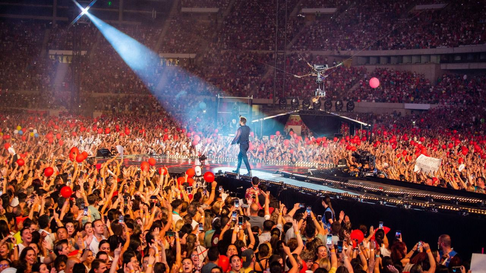

Un poco sobre mi vida
ÍNDICE
- Biografía
- Estudios
- Aficciones
- Viajes
1. Biografía
Nací el 31 de agosto de 2002 y tengo 20 años. Vivo en Sevilla, una ciudad de Andalucia en el sur de España. Vivo con mis padres y mi hermano en un piso cerca del centro histórico
2. Estudios
Hice el bachillerato de ciencias de la salud y quería estudiar matemáticas, informática o astronomía. Finalmente entré en la carrera de Ingeniería Informática del Software.
Actualmente estoy estudiando tercero de carrera de erasmus en Porto.
3. Aficciones
Una de las cosas que más me gusta hacer es escuchar música e ir a conciertos, es una de las mejores experiencias que existe. Me gusta el baile y el fútbol. También me gusta ver series y películas. Mi serie favorita es Games of thrones.

Canciones favoritas
| Canción | Artista | Marca si conoces la canción |
|---|---|---|
| Sign of the Times | Harry Styles | |
| Mariposa | Pablo López | |
| Wonder | Shawn Mendes |
4. Viajes
He estado viajando por diferentes partes de España como Barcelona, Galicia, Madrid, Valencia. De Portugal he visitado Lisboa, Oporto, Cascais y he hecho una ruta en coche por el Algarve. Además he viajado a Londres y Dublín y he estado por varias ciudades de Francia.